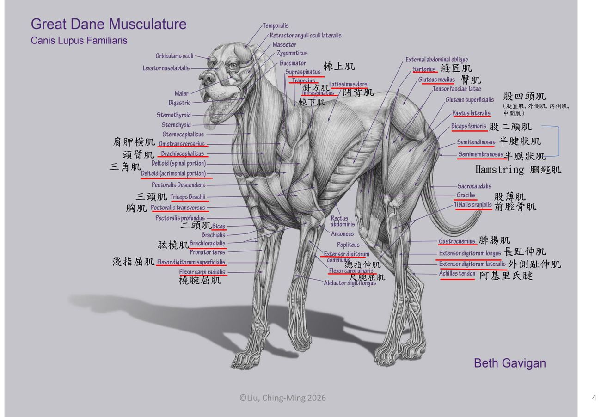
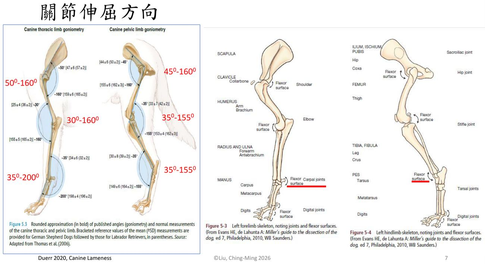
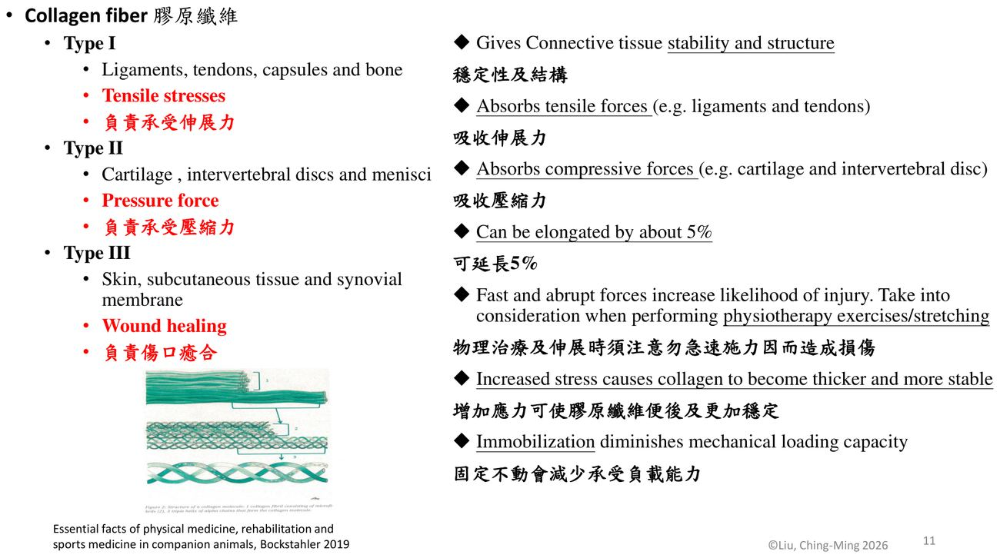

大方向與重點摘要
- 這章在講什麼
- 復健的「時間表」從哪裡來：每一種組織（骨、骨骼肌、肌腱、韌帶、關節軟骨、神經）都有自己的構造與癒合速度。講義先複習方位、骨骼、肌肉與關節活動度，再講傷口癒合三期、結締組織的膠原與彈性纖維，然後逐一講各組織的癒合時間軸與對復健的意涵（固定多久、何時開始被動／主動運動、何時恢復多少強度）。
- 為什麼重要
- 第 3、4 週的疾病復健方案都是建立在這些數字上：例如肌腱術後要固定 3–6 週、6 週後才輕度負重、1 年只回到約 80% 強度。太早用力會再受傷，太晚動會讓組織變弱、軟骨退化。學長姐考前整理把這份講義的數字幾乎整段列出。
- 這章要抓的重點
-
- 傷口癒合三期：發炎期（0–5 天，只用儀器、避免主動運動）→ 修補期（5–21 天，適度物理壓力幫助纖維排列）→ 重建期（21 天～1 年）。
- 膠原纖維三型：I 型抗張力（肌腱、韌帶、骨）、II 型抗壓力（軟骨、椎間盤、半月板）、III 型傷口癒合；膠原只能延長約 5%，彈性纖維 70%–220%。
- 骨癒合：初級（間隙 < 1 mm、應變 < 2%，無骨痂）與次級（> 1 mm、> 2%，骨痂 10–12 天出現）；Wolff's law；簡單骨折約 90 天完成重建。
- 肌肉：先固定 0–5 天 → 保護性活動 4 週 → 再加強；三種收縮（等長、向心、離心）；三種萎縮（廢用、神經性、肌少症）。
- 肌腱與韌帶：術後固定 3–6 週、6 週後輕度負重、1 年約 80% 強度；韌帶參數比照肌腱，1 年 50–70%。
- 關節軟骨：無血管、無神經、靠關節液；固定 3–4 個月後年輕犬要近 1 年才完全再生；持續被動關節活動（PROM）有助修復。
- 神經：中樞無法恢復但有可塑性；深層痛覺是預後關鍵；周邊神經損傷三級。
- 組織癒合時間總表：一張表比較各組織的時間與強度數字。
- 容易混淆
- 初級 vs 次級骨癒合：初級沒有骨痂，早期穩定度較差，植入物要留更久。向心 vs 離心收縮：向心是肌纖維縮短產生動作，離心是肌纖維被拉長以控制或抵抗動作（學長姐筆記：下坡練離心）。廢用性 vs 神經性萎縮：前者慢、可逆、伸肌較明顯；後者快（約 1 週內）、會攣縮纖維化。部分厚度 vs 全厚度軟骨缺損：部分厚度沒有發炎反應、反而修不好；全厚度到軟骨下骨，有骨髓細胞參與，但長出來的是纖維軟骨。
- 考試可能怎麼問
（推測） - 各組織固定與恢復時間（學長姐整理列出）；膠原纖維類型與功能；初級與次級骨癒合的條件；三種收縮型態；三種肌肉萎縮比較；Ruffini 與 Pacini 感受器；軟骨固定與再生時間；周邊神經損傷分級；深層痛覺與預後。
內容以老師講義為主體。標示「補充」的段落（含「讀書補充Note」）是講義以外的延伸；標示「推測」的是依講義強調處推測的出題方向，不是考古題。標 學長姐整理 的地方表示學長姐考前整理（非官方，見第 13 節）有列這一點，不代表老師確定會考。考試範圍以老師上課為準。圖片為老師講義截圖。
約 0–3／0–5 天
止痛消炎、只用儀器
約 3／5 天–3／6 週
控制下的小負荷
3 週–1 年以上
逐步加量、依應力排列
補充：各組織的期別天數略有不同（見第 12 節總表），上圖取講義 p.8 一般傷口癒合與 p.20、p.32、p.35 的範圍合併表示。
方位、骨骼、肌肉與關節活動度 Basic Anatomy
復健描述動作與位置的共同語言，以及前後肢「跨幾個關節」的肌肉——跨越的關節越多，伸展與受傷的考量越多。
方位與切面理解
| 方位（p.2） | 意思 | 切面（p.2） | 意思 |
|---|---|---|---|
| 背側 dorsal／腹側 ventral | 朝背／朝腹 | 正中切面（縱剖面）median plane | 把身體分成左右兩半 |
| 吻端 rostral | 頭部朝鼻端 | 矢狀面 sagittal plane | 與正中面平行 |
| 前側 cranial／後側 caudal | 朝頭／朝尾 | 橫剖面 transverse plane | 與長軸垂直 |
| 內側 medial／外側 lateral | 靠近／遠離正中面 | 背剖面 dorsal plane | 與背面平行，分成上下 |
| 近端 proximal／遠端 distal | 四肢靠近／遠離軀幹 |
補充：「意思」欄是整理者補的；四肢遠端的前後面另稱掌側（palmar，前肢）與蹠側（plantar，後肢）。

跨多關節的肌肉必考
| 肢 | 跨 2 關節 | 跨 3 關節 | 講義圖上其他肌肉 |
|---|---|---|---|
| 前肢（p.5） | 二頭肌、橈腕伸肌 | 總指伸肌、淺指屈肌、深指屈肌 | 棘上肌、大圓肌、三頭肌（4 頭）、尺腕屈肌（2 頭）、骨間肌 |
| 後肢（p.6） | 股四頭肌、半腱狀肌、腓腸肌、深趾屈肌 | 淺趾屈肌、長趾伸肌 | 中臀肌、髂腰肌、股二頭肌、半膜狀肌、前脛骨肌 |
補充：跨多個關節的肌肉在一個關節伸展時會被另一個關節「牽制」，所以伸展這類肌肉要同時擺好兩三個關節的位置；它們也較容易拉傷（例如後面的髂腰肌、股薄肌）。這段解釋講義沒寫。
關節伸屈方向與正常活動範圍必考
| 前肢關節 | 屈曲～伸展角度（p.7） | 後肢關節 | 屈曲～伸展角度（p.7） |
|---|---|---|---|
| 肩關節 | 50°–160° | 髖關節 | 45°–160° |
| 肘關節 | 30°–160° | 膝關節 | 35°–155° |
| 腕關節 | 35°–200° | 跗關節 | 35°–155° |
用量角器（goniometer）量關節「最大屈曲」與「最大伸展」的角度。前一個數字越小代表彎得越緊，後一個越大代表伸得越直。講義圖的來源是 Duerr 2020《Canine Lameness》（整理自 Thomas et al. 2006，德國牧羊犬與拉布拉多的測量值）。腕關節可以伸到 200°（超過 180°，就是站立時腕部微微過伸），是唯一超過 180° 的。關節活動度的量法見第 8 週（補充）。

傷口癒合 Wound Healing
所有組織都走「發炎 → 修補 → 重建」三期；每一期能做的復健不同，這是後面所有時間表的骨架。
再生與修補必考
再生 Regeneration
恢復原本的性質與功能，例如骨癒合。
修補 Repair
以疤痕組織取代，例如軟骨、肌肉、韌帶、肌腱的癒合。
三期與復健原則必考
| 期別（p.8） | 時間 | 復健原則 |
|---|---|---|
| 發炎期 Inflammatory | day 0–5（血管期 0–2 天、細胞期 2–5 天） | 僅能使用加速癒合、減少炎症的復健設備（modalities）；避免主動運動 |
| 修補期 Reparative（proliferative, fibroblastic） | day 5–21 | 施加物理性壓力可增進組織排列及穩定度 |
| 重建期 Remodeling（consolidation and maturation） | day 21～1 年 | 能承受更多應力 |
※ 講義 p.8 左側文字寫發炎期 day 0–5，右側圖寫「Inflammatory phase 2nd–5th day」，是因為圖把前 2 天另標為血管期（vascular section）。
結締組織 Connective Tissue
肌腱、韌帶、骨、軟骨都是結締組織；它們的強度與彈性取決於膠原纖維、彈性纖維與基質的比例。
功能、類型與組成理解
| 項目 | 內容（p.9–10） |
|---|---|
| 功能 | 連接（關節囊、肌腱、韌帶）、支持及保護（骨骼）、營養及廢物運送、身體防禦 |
| 類型 | 纖維組織（皮膚、肌腱、韌帶、腱膜）、脂肪組織、骨架組織（骨、軟骨） |
| 細胞 | 纖維母細胞／纖維細胞、成骨細胞／骨細胞、軟骨母細胞／軟骨細胞、肥大細胞、脂肪細胞、巨噬細胞、白血球 |
| 細胞外基質 ECM | 膠原纖維、彈性纖維、基質（ground substance）、水、非膠原纖維（如交連蛋白） |
膠原纖維三型必考
| 類型 | 分布（p.11） | 負責 |
|---|---|---|
| Type I | 韌帶、肌腱、關節囊、骨 | 承受伸展力（tensile stress） |
| Type II | 軟骨、椎間盤、半月板 | 承受壓縮力（pressure force） |
| Type III | 皮膚、皮下組織、滑膜 | 傷口癒合 |
- 膠原纖維給結締組織穩定性與結構；只能延長約 5%。
- 快速、突然的力量容易造成損傷：物理治療與伸展時勿急速施力。
- 增加應力使膠原纖維變厚、更穩定；固定不動會減少承受負載的能力。

彈性纖維與基質理解
| 成分 | 特性 |
|---|---|
| 彈性纖維（黃纖維） | 分布於皮膚、血管、疏鬆結締組織，少部分在肌腱與韌帶；網狀結構；可延伸 70%，最高 220%；受力時先由彈性纖維承受，再慢慢轉給膠原纖維（p.12） |
| 膠原纖維（白纖維） | 主要在韌帶、皮膚真皮；強大韌性與抗拉力，但缺乏彈力（p.13） |
| 基質 ground substance | 蛋白聚醣聚合體，親水、含水量高；吸收外力保護組織（軟骨、椎間盤、半月板最明顯）；醣胺聚醣（GAG）與蛋白聚醣（PG）結合纖維穩定組織；提供彈性讓組織受力後回復形狀（p.14） |
結締組織的營養必考
- 氧氣、營養與廢物經微血管血液及組織液傳輸到細胞（p.15）。
- 組織內：有血流灌流的靠血液；無血流灌流的靠滲透及擴散。
- 組織負重與不負重：機械應力促進血流循環與壓電效應；肌肉、肌腱靠收縮及伸展，軟骨、椎間盤、半月板靠壓縮力。
骨與骨癒合 Bone & Bone Healing
骨是唯一能「再生」回原樣的組織；但初級或次級癒合、早期穩定度與骨折間隙，決定了復健可以多早給負荷。
骨的構造與組成理解
- 分段：關節軟骨、骨骺（epiphysis）、幹骺端（metaphysis）、骨幹（diaphysis）（p.16）。
- 組成：水 5–10%、有機物 20%（細胞與基質）、礦物質 70%（羥基磷灰石 Ca5(PO4)3(OH)）。
- 結構：密質骨（皮質骨）、鬆質骨（海綿骨）、哈維氏系統、血液循環。骨的結構完全適應生物力學需求，並隨負荷不斷重塑。
初級與次級骨癒合必考
| 初級（直接）骨癒合 Direct／primary | 次級（間接）骨癒合 Indirect／secondary | |
|---|---|---|
| 條件（p.17） | 骨折間隙 < 1 mm、間隙應變 < 2% | 間隙 > 1 mm、應變 > 2% |
| 方式 | 接觸癒合（contact healing）；間隙癒合（gap healing，> 0.1 mm 但 < 1 mm） | 依一般組織癒合模式形成骨痂（callus） |
| 影像（p.19） | 沒有骨痂；骨折線消失比次級慢 | 骨痂 10–12 天出現，骨折線最早 30 天內消失 |
| 穩定度（p.19） | 早期穩定度較差，要靠植入物，植入物留置時間較久 | 骨痂提供早期穩定 |
補充：「應變（strain）」＝骨折間隙在受力時長度改變的百分比；骨板加壓固定、骨折端緊密貼合時才可能是初級癒合。
讀書補充Note - 初級 vs 次級骨癒合：差在骨折端貼得多緊、動得多少
先講結論
骨折端幾乎貼緊又不動（間隙 < 1 mm、應變 < 2%）→ 初級，不長骨痂；有縫又會微動（> 1 mm、> 2%）→ 次級，先長骨痂再重塑（p.17）。初級沒有骨痂撐，早期穩定度靠植入物（p.19）。
1. 兩個條件是什麼
- 骨折間隙（gap）：兩個骨折端之間的縫有多寬。
- 間隙應變（strain）：受力時這條縫被擠壓、拉開，長度變化的百分比。
2. 兩種癒合比較
| 初級（直接）癒合 | 次級（間接）癒合 | |
|---|---|---|
| 條件（p.17） | 間隙 < 1 mm、應變 < 2% | 間隙 > 1 mm、應變 > 2% |
| 常見情境（補充） | 骨板加壓、骨折端緊密貼合，幾乎不動 | 外固定、骨髓釘、未加壓骨板，骨折端會微動 |
| 怎麼長（補充） | 不形成骨痂；骨細胞直接跨過骨折線，把兩端接起來 | 走一般傷口癒合：血腫 → 軟骨痂 → 硬骨痂 → 重塑 |
| X 光（p.19） | 看不到骨痂；骨折線消失比次級慢 | 10–12 天出現骨痂；骨折線最早 30 天內消失 |
| 早期穩定（p.19） | 較差，要完全靠植入物，植入物留置較久 | 骨痂像天然外固定，提早提供穩定 |
3. 為什麼切點是 1 mm、2%
- 骨細胞只能長在幾乎不動的環境；縫太寬或動太多它跨不過去，身體就先長軟骨與骨痂「填縫、穩住」，再慢慢換成骨頭。
4. 最容易卡住的觀念
- 初級不等於「比較穩」
- 初級癒合本身沒有骨痂，早期穩定度靠的是骨板，不是骨頭自己。
- 沒有骨痂不代表沒在癒合
- 骨板加壓固定的術後片看不到骨痂是預期中的；植入物不能太早移除。
- 跟 TPLO 的關係
- TPLO 用骨板固定、鋸口貼合，通常偏向初級癒合，見TPLO 專題第 7 節。
要不要背
- 一定要會
- 初級 < 1 mm、< 2%、無骨痂、早期穩定差、植入物留久；次級 > 1 mm、> 2%、骨痂 10–12 天。
- 懂原理就好
- 為什麼不動才能直接癒合、骨痂的穩定作用。
- 不用背
- 常見情境對應的固定方式、骨痂各階段名稱。
補充：標講義頁碼的是講義內容；「常見情境」「怎麼長」「為什麼切點是這樣」與 TPLO 連結為整理者依一般骨科學補充。
Wolff's law 與壓電效應必考
- 沃爾夫定律（Wolff's law）：健康個體的骨骼在負載增加時會慢慢變強壯，以承受該負載；重建期約 3 個月（p.17）。
- 壓電效應（piezoelectric effect）：張力側（＋）蝕骨細胞增加；壓縮側（－）成骨細胞增加（p.17）。
- 解除固定後第一個月建議牽繩慢走或輕度跑步機活動 學長姐整理（p.17）。
讀書補充Note - 骨的壓電效應（piezoelectric effect）
先講結論
骨受力變形會產生電荷：張力側帶正電（＋）→ 蝕骨細胞（osteoclast）增加、骨被吸收；壓縮側帶負電（－）→ 成骨細胞（osteoblast）增加、骨被加上去（講義 p.17）。這是沃爾夫定律（Wolff's law）的一種細胞層級解釋：壓電效應是機制，Wolff's law 是結果。
1. 電從哪裡來
- 骨的有機基質主要是第一型膠原（type I collagen），排列很規則；被拉長或擠壓時，分子內電荷偏離平衡位置，表面出現電位差，這就是「機械力 → 電」的壓電效應。
- 另一個來源是流動電位（streaming potential）：受力時骨小管（canaliculi）內的組織液被擠著流動，帶電離子跟著移動，也會產生電位。
2. 電怎麼變成「長骨或吃骨」
- 骨被彎曲時（講義 p.17 右下股骨圖）：凹側被壓 → 負電位 → 成骨；凸側被拉 → 正電位 → 吸收。
- 結果是骨往受力最大的方向加厚、不需要的地方變薄。
3. 跟復健的關係
- 為什麼要負重
- 骨要週期性受力才會持續產生電訊號、維持重塑；長期固定或不負重 → 吸收大於生成 → 廢用性骨流失。所以講義建議解除固定後第一個月牽繩慢走或輕度跑步機（p.17），給小量可控的負荷。
- 為什麼不能太猛
- 骨痂強度還不夠，負荷過大會再骨折或植入物鬆脫；對應第 4 週骨折「勿過度操作」。
- 幼犬骨折癒合後角度會慢慢變直
- 彎曲處凹側持續被壓而加骨、凸側被吸收，骨逐漸往正中線重塑。
- 電與磁的治療
- 既然電訊號能刺激成骨，外加電磁刺激也用來促進骨癒合：講義 p.18 影響骨癒合的因素列「電場效應」；第 6 週 PEMF 適應症列「骨癒合／生長」。
4. 現代觀點
- 壓電效應是較早期的理論。現在一般認為感受力量的主角是埋在骨基質裡的骨細胞（osteocyte）：受力讓骨小管液體流動，骨細胞感受剪力後調整訊號（例如減少硬化蛋白 sclerostin、調整 RANKL／OPG），再指揮成骨與蝕骨細胞。講義 p.17 中間的骨重塑圖畫的 osteocyte、sclerostin、RANKL 就是這條路徑。
要不要背
- 一定要會
- 張力側（＋）→ 蝕骨細胞增加；壓縮側（－）→ 成骨細胞增加；與 Wolff's law 的關係。
- 懂原理就好
- 負重與固定對骨重塑的影響、電磁刺激促進骨癒合的道理。
- 不用背
- 流動電位、骨細胞機械傳導、sclerostin／RANKL 的細節。
補充：除了標講義頁碼的句子，其餘為整理者依一般骨生理學補充，非講義內容；「要不要背」依講義強調處判斷，以老師上課為準。
影響骨癒合的因素理解
生物力學因子（Wolff's law）、電場效應、內分泌（PTH、calcitonin、維生素 D、甲狀腺）、年齡（年輕 > 老年）、治療性超音波與體外震波（p.18）。
骨的癒合時間軸與復健必考
肌肉構造、纖維類型與能量系統 Muscle Structure
肌小節怎麼縮短、慢肌與快肌的差別、三種供能系統——解釋為什麼耐力訓練和爆發訓練要分開設計。
肌肉單位與肌小節理解
肌纖維束 → 肌纖維 → 肌原纖維 → 肌球蛋白微絲（粗肌絲）、肌動蛋白絲（細肌絲）→ 肌小節（Z 線、M 線、I 帶、A 帶、H 區）（p.21）。
| 肌小節部位 | 收縮時 | 為什麼（p.23） |
|---|---|---|
| A 帶（暗帶） | 不變 | 代表粗肌絲全長，粗肌絲本身沒有變短 |
| 粗肌絲、細肌絲 | 不變 | 蛋白質纖維本身長度固定 |
| I 帶（明帶） | 變短 | 只含細肌絲的區域，隨細肌絲被拉向中央而縮短 |
| H 區 | 變短甚至消失 | A 帶中央只含粗肌絲的區域，細肌絲插入而縮短 |
| 肌小節 | 變短 | 兩條 Z 線被拉近 |
肌纖維類型必考
| 慢肌 Slow twitch（Type 1） | 快肌 Fast twitch（Type 2） | |
|---|---|---|
| 顏色與代謝（p.24） | 紅肌；有氧（氧化酶、肌紅素、粒線體多） | 白肌；無氧（糖解酶多） |
| 收縮 | 收縮時間長、耐力高、抗疲勞；抗重力伸肌收縮 | 收縮時間短、爆發力大，適合跳躍、衝刺；容易疲勞 |
| 例子 | 股四頭肌 | 腓腸肌 |
- 犬有 5 類肌纖維：type I、IIa、IIx，以及兩種混合型（I＋IIa、IIax）（p.24）。
- 肌纖維組成與肌肉功能密切相關，並會隨功能需求改變。
能量系統理解
| 能量系統（p.25） | 供能方式 | 供能時間 | 需要氧氣 |
|---|---|---|---|
| 即時能量系統 | 儲存的高能量物質直接提供 | 約 5–10 秒（頂尖運動員約 20 秒） | 不需要 |
| 糖解系統 | 無氧分解葡萄糖 | 約 5–20 秒至 2 分鐘 | 不需要 |
| 氧化系統 | 有氧代謝 | 約 2 分鐘後成為重要來源 | 需要 |
| 比較（p.27） | 無氧醣解 | 有氧醣解 |
|---|---|---|
| 最終產物 | 乳酸與 2–3 個 ATP | 丙酮酸進粒線體 → CO2、水與約 30–32 個 ATP |
| 速度 | 極快，瞬間爆發 | 較慢 |
| 運動強度 | 高強度（全力衝刺、高強度間歇） | 中低強度（慢跑、健走、長距離） |
| 維持時間 | 約 30 秒至 2 分鐘 | 數十分鐘至數小時 |
| 主要限制 | 乳酸與氫離子累積 → 肌肉痠痛、疲勞 | 肝醣耗盡 |
學長姐整理 p.1：「耐力訓練必須超過 15 分鐘才算，如快走、跑步、游泳、拉雪橇」——這句出自第 4 週骨科講義第 22 頁（例如快走、跑步、游泳、長距離拉雪橇），本講義沒有；與上表「有氧系統約 2 分鐘後才成為主要來源」方向一致。
肌肉癒合、萎縮與收縮型態 Muscle Healing, Atrophy & Contraction
肌肉受傷後「先短暫固定、再保護性活動、最後加強」；固定太久會萎縮，而萎縮的種類決定恢復速度。
肌肉損傷的種類與嚴重度必考
種類（p.28）
- 挫傷 Contusion（鈍力）
- 拉傷 Strain（間接）
- 撕裂傷 Laceration（銳器）
嚴重度（p.28）
- Stage I：肌炎（myositis）
- Stage II：筋膜鞘發炎
- Stage III：肌纖維斷裂及血腫
肌肉癒合時間軸必考 學長姐整理
| 期別 | 內容（p.32） |
|---|---|
| 發炎期 | 立即～72 小時 |
| 修補期 | 3 天起以第 III 型膠原作為肌纖維的支架；> 6 週才有正常比例的膠原 |
| 重建期 | 功能性肌纖維與疤痕組織的比例，取決於受傷處間隙的大小 |
| 強度 | 完全恢復功能需正常組織再生，最少 4–6 週。兔子試驗：肌腹完全撕裂 12 週後恢復 50% 張力、80% 收縮縮短；部分撕裂 12 週恢復 60% 張力與正常收縮力 |
肌肉復健時程必考 學長姐整理
固定 immobilization
控制下的保護性活動
開始強化運動
| 損傷程度（p.33） | 處理 |
|---|---|
| 輕微拉傷 | 短暫固定 3–5 天，再以主動肌肉收縮活動 → 肌纖維較能穿過疤痕、肌力與大小較好 |
| 肌肉撕裂 | 至少固定 2–3 週，保護修補、促進新膠原 |
| 完全斷裂 | 4–8 週可開始中度活動；8–12 週可不限制活動 |
肌肉復原時收縮力降低的程度，與受傷程度及纖維組織長入的程度直接相關（例如髂腰肌損傷、棘下肌攣縮）（p.33）。
三種肌肉萎縮必考
| 廢用性萎縮 Disuse | 神經性萎縮 Neurogenic | 肌少症 Sarcopenia | |
|---|---|---|---|
| 原因（p.29） | 跛行、關節固定（繃帶、外固定器） | 癱瘓 | 老化 |
| 速度 | 慢 | 快，約 1 週內 | 漸進 |
| 特徵 | 可逆但不完全；伸肌比屈肌易受影響；主要是維持姿勢的第一型纖維肌群 | 先攣縮、再纖維化；嚴重度依神經損傷程度 | 肌纖維凋亡、變小；早期肌肉周徑可能不變（被脂肪與纖維組織取代） |
| 處理 | 重新活動 | 依神經恢復 | 無法完全預防；延緩兩方法：增加蛋白質、向心收縮運動（肢體負重、水療、平衡板） |
肌肉重新活動要點（p.29）：依動物狀態選擇；增加機械負荷；強度訓練如跑步機、游泳；離心與向心收縮運動。
三種收縮型態必考 學長姐整理
| 收縮（p.30–31） | 肌纖維長度 | 作用 | 例子（補充） |
|---|---|---|---|
| 等長收縮 Isometric | 不變 | 維持姿勢、穩定關節 | 站立平衡、在平衡板上維持不動 |
| 向心收縮 Concentric | 縮短 | 產生關節動作 | 上坡、坐到站 |
| 離心收縮 Eccentric | 拉長 | 控制或抵抗動作 | 下坡（學長姐筆記：下坡路能練離心）、站到坐。⚠ 第 4 週骨科講義第 22 頁卻把「水療機坡度上升、上斜坡」列為離心例子，兩者不同，見第 4 週 |
讀書補充Note - 三種收縮型態怎麼分
先講結論
只問兩件事：① 這條肌肉有沒有在出力？② 出力時它的長度在變短、變長，還是不變？變短＝向心，不變＝等長，一邊出力一邊被拉長＝離心（p.30–p.31）。
1. 出力和外力的關係
| 出力 vs 外力（重量、重力） | 肌肉長度 | 關節 | |
|---|---|---|---|
| 向心（Concentric） | 出力 大於 外力 | 變短 | 被肌肉拉著動 |
| 等長（Isometric） | 出力 等於 外力 | 不變 | 不動 |
| 離心（Eccentric） | 出力 小於 外力，但沒有放鬆 | 被拉長 | 被外力帶著動，肌肉在踩煞車 |
2. 用講義的圖來看
- 手拿杯子（p.30，主角是二頭肌）
- 把杯子舉起來：出力大於杯子重量，肌肉變短、手肘彎起 → 向心。
- 手肘停在半空中拿著：出力等於杯子重量，長度不變 → 等長。
- 慢慢放下杯子：二頭肌仍在出力，只是比重力小一點，所以一邊用力一邊被拉長 → 離心。二頭肌真的放鬆的話，杯子會直接掉下去；「慢慢放」這個控制就是離心收縮。
- 三角肌舉手臂（p.31）
- 手臂往外舉＝向心；舉著不動＝等長；慢慢放下＝離心（三角肌對抗重力踩煞車）。
3. 換成狗（看後肢伸肌：股四頭肌、臀肌、膕繩肌）
- 坐 → 站：伸肌把身體推上去，肌肉變短 → 向心。
- 站 → 坐：伸肌讓身體慢慢坐下、不是摔下去，一邊出力一邊變長 → 離心。
- 上坡：伸肌出力推身體往上 → 以向心為主。
- 下坡：重力把身體往下帶，伸肌煞車，避免膝和髖一直彎下去 → 以離心為主（學長姐「下坡練離心」）。
- 站在平衡板上不動：一直出力維持姿勢，長度幾乎不變 → 等長。
4. 跟第 4 週講義不一致的地方
- 第 4 週講義第 22 頁把「水療機坡度上升、上斜坡」列為離心例子，跟本講義定義與學長姐筆記不同。依定義，上坡時後肢伸肌主要是向心；考題若明確引用第 4 週的寫法，就照那份講義作答。
5. 臨床意義
- 離心收縮能產生的力量最大，但也最容易造成肌肉微損傷與延遲性肌肉痠痛（Delayed Onset Muscle Soreness, DOMS）。所以術後復健通常先做等長（平衡板、站立），再做向心（坐站、上坡），離心（下坡、下樓梯）較晚才加；例如第 4 週肘關節發育不良「鞏固期才做下階梯」。
要不要背
- 一定要會
- 三種收縮的長度變化與作用；坐站、上下坡、平衡板各屬哪一種。
- 懂原理就好
- 出力與外力的大小關係；離心為什麼放在復健後期。
- 不用背
- DOMS 的機轉細節。
補充：除了標講義頁碼的句子，其餘（狗的例子、出力與外力的比較、臨床意義）為整理者依一般運動生理學補充；「要不要背」依講義強調處判斷，以老師上課為準。
讀書補充Note - 投影片說「上斜坡是離心收縮」？上坡 vs 下坡的收縮型態
先講結論
生理學上「上坡」主要是向心收縮，「下坡」才是離心；投影片把上斜坡放在離心底下，是用「高阻抗、練快縮肌（type II）」的教學簡化，不是肌肉長度的定義（講義治療性運動投影片 p.22）。
1. 三種收縮怎麼分（看肌肉長度）
- 向心（concentric）：出力時肌肉變短。
- 等長（isometric）：出力但長度不變。
- 離心（eccentric）：出力時肌肉被拉長，在「煞車」，例如下樓梯時股四頭肌控制膝蓋慢慢彎。
2. 上坡實際發生什麼
- 上坡要把身體往上推，髖、膝、跗關節的伸肌（臀肌、股四頭肌、腓腸肌）邊出力邊縮短 → 向心。
- 下坡、下階梯、慢慢坐下：伸肌在被身體重量拉長時煞車 → 離心。
- 水療機坡度上升、游泳對抗噴水也是向心為主。
3. 投影片為什麼這樣放（補充推測）
- 離心那條寫「訓練 type II 肌纖維（快縮肌主速度）、高阻抗運動」，上坡、上階梯快走、水療機調高坡度、游泳對抗噴水都是「阻力大、爆發力高」的動作，老師用它們代表練肌力與速度。
- 比較貼近離心的例子是下坡、下階梯。
4. 要不要背
- 考試如果出自這張投影片，照老師的寫法：離心＝練 type II、速度、高阻抗；向心＝練 type I、耐力。
- 這個對應是教學簡化，肌肉生理上不是絕對的。
- 建議問老師：「上斜坡是離心收縮，是指哪一個肌群、哪一個階段？」
補充：第 3 點為整理者推測，講義沒有解釋；上坡／下坡的收縮型態為一般運動生理學。
肌腱與韌帶 Tendon & Ligament
肌腱與韌帶幾乎全是 I 型膠原、血流少，所以修得慢：固定 3–6 週、6 週後才輕度負重、1 年後強度仍不到原本的八成。
構造比較必考
| 肌腱 Tendon | 韌帶 Ligament | |
|---|---|---|
| 連接（p.34） | 肌肉 → 骨，伸屈關節 | 骨 → 骨，控制動作、穩定關節 |
| 膠原 | > 98% type I；長度可改變約 5% | 90% type I／10% type III |
| 分類 | 腱旁組織包覆（有血管）：如腓腸肌、三頭肌肌腱 滑膜鞘包覆（無血管）：如指屈肌腱 | 關節囊內（如十字韌帶）、關節囊外（如脊柱的韌帶） |
| 感受器 | — | 含痛覺感受器、Golgi 感受器（偵測拉力） |
剛開始拉時，捲曲的膠原先被拉直（腳趾區，不太費力）；接著膠原本身被拉長，放手可回復（彈性區）；超過屈服點後纖維開始斷裂、放手也回不去（塑性區）；最後斷裂。伸展運動要停在彈性區內。
肌腱癒合時間軸必考
| 期別 | 內容（p.35） |
|---|---|
| 發炎期 | 立即～72 小時 |
| 修補期 | 第 5 天起膠原隨機排列並逐漸增加達 4 週；膠原生成在受傷後 5–12 天達高峰，第 60 天明顯減少 |
| 重建期 | 至少 28 天膠原纖維才依應力方向排列；112 天肌腱外觀正常 |
| 強度 | 6 週約 56%，1 年以上約 79%。間隙 > 3 mm 的肌腱 6 週時強度較差；滑膜鞘（無血管）肌腱比有血管的癒合更久 |
肌腱復健時程必考 學長姐整理
固定（可從第 5 天開始有限制的被動活動）
輕度負重運動
較不受限的主動負荷
強度約 80%
- 大肌腱修復後可能需要支撐最多 6 週（方式依外科醫師、部位、動物行為而定）（p.36）。
- 長期固定有害：完全固定超過 21 天會減少傷口處血管新生；21 天內開始早期控制下的被動活動最理想；完全或部分斷裂手術修復後，術後第 5 天開始被動活動最佳（p.36）。
- 6 週可開始輕度負重的保守運動，因為肌腱有正常強度的 25–30% 就足以承受正常肌肉力量（p.36）。
- 最少 12 週才能較不受限、較主動的負荷；恢復到足以正常活動負重可能要好幾個月（p.36）。
- 輕度運動維持 ROM 並刺激癒傷組織細胞；癒傷組織成熟需要一些負重（p.36）。
講義 p.34 寫「術後 1 年肌腱強度恢復 80%」（學長姐整理也寫 80%），p.35 寫「6 週 56%、1 年以上 79%」，兩頁是約略相同的數字。考試寫 80%（1 年）較保險，但兩個都可能出現。
韌帶（扭傷）癒合與復健必考 學長姐整理
| 項目 | 內容（p.37–38） |
|---|---|
| 發炎期 | 立即～72 小時 |
| 修補期 | 2–3 天至 6 週 |
| 強度 | 依分級（I–III）需數天至超過 1 年；1 年時 50–70% 張力；不同韌帶差異大；間隙形成可能讓韌帶變長 |
| 何時開始復健 | 依韌帶而異；不確定時比照肌腱的參數 |
| 固定的影響 | 固定期間關節活動與應力減少 → 韌帶強度與張力下降（固定期間做關節活動可減緩） |
| 運動 | 馬的研究：每次 30 分鐘、每週 6 天（低時長、高頻率）對韌帶強度最有益 |
| 預後 | 韌帶與骨交界處的扭傷－撕裂骨折（sprain-avulsion fracture）恢復正常張力的預後最好 |
關節囊與關節軟骨 Joint Capsule & Cartilage
軟骨沒有血管、神經、淋巴，營養全靠關節液交換；所以它最怕「不動」，也最難修好。
關節囊必考
- 包覆關節、產生關節液，讓動作無摩擦；關節液提供軟骨營養；含許多本體感覺感受器（p.39）。
- 外層：纖維層（主要是膠原），力學穩定。內層：滑膜層，靠近滑膜下血管叢；A 型滑膜細胞有吞噬作用，B 型分泌玻尿酸。
| 關節囊感受器（p.39） | 講義英文原文 |
|---|---|
| Ruffini 末梢（關節感受器 type I） | 傳遞關節的位置與動作資訊 |
| Pacini 小體（關節感受器 type II） | 傳遞關節動作資訊，所以又稱動態感受器（dynamic receptor） |
| 痛覺感受器 nociceptor | — |
講義 p.39 英文寫 Ruffini＝位置＋動作、Pacini＝動作（動態）；但同頁中文摘要寫成「Ruffini 感知關節動作，Pacini 感知關節體位及關節動作」，兩者對調。上表照英文原文（也與一般教科書一致：Ruffini 為慢適應、感知靜態位置，Pacini 為快適應、感知動作，補充）。考試若遇到，建議以英文版為準並可附註，⚠ 建議向老師確認。
關節與軟骨的類型理解
- 關節：滑膜關節（如肩）、纖維關節（如冠狀縫）、軟骨關節（如恥骨聯合）（p.51）。
- 軟骨三種：透明軟骨、彈性軟骨、纖維軟骨。透明軟骨減少關節內摩擦、吸收作用於關節的力量。
- 軟骨組成：軟骨細胞、細胞外基質與水（水 65–80%）；第二型膠原、蛋白聚醣聚合體（含玻尿酸）、醣胺聚醣（硫酸角質素、硫酸軟骨素）（p.52）。
- 無血液、無神經、無淋巴；營養與廢物完全靠關節液交換（p.52）。
軟骨損傷與癒合必考
| 部分厚度缺損 Partial thickness（p.54） | 全厚度缺損 Full thickness（達軟骨下骨）（p.55） | |
|---|---|---|
| 發炎期 | 沒有發炎反應（無血管） | 立即～3–5 天（炎症細胞來自骨髓） |
| 修補期 | 受傷 1 週後有絲分裂就停止 | 5–7 天至 2 個月 |
| 重建期 | 1 年也無法填滿缺損（缺乏發炎修復反應） | 2–6 個月；6 個月時修復組織已明顯不同於透明軟骨，是纖維性、較差；1 年時只有 20% 為第二型膠原 |
| 結論 | 修復取決於年齡、缺損大小與位置；無論如何，透明軟骨極少完全復原。持續受損最終走向骨關節炎（OA）（p.53）。 | |
固定與重新活動對軟骨的影響必考 學長姐整理
- 軟骨復原與關節固定時間長短、損傷程度、動物狀態有關；年輕犬固定 3–4 個月後，需近 1 年才完全再生（p.53）。
- 持續被動關節活動（continuous PROM）改善修復：兔子試驗中以透明軟骨為主修復的缺損，青春期 60%、成年 44%；對照組（石膏固定或籠內自由活動）≤ 10%。缺損直徑 > 3 mm 效果較差（p.56）。
- 固定 6 週後，3 週自由、低強度活動 → 軟骨恢復正常（p.57）。
- 固定越久，恢復越久；年輕犬固定超過 15 週，即使再活動 50 週也可能無法完全恢復（p.57）。
- 解除固定後劇烈運動對軟骨有害（p.57）。
軟骨：早動（被動）、慢慢加量、不要猛衝。固定 6 週還救得回來，固定超過 15 週可能救不回來。
相關肌肉、肌腱、韌帶與關節疾病 Clinical Correlates
講義用一串常見病把上面的組織學接到臨床：每個病要知道是哪條肌肉／肌腱／韌帶、起止點與功能、怎麼分級。各病的復健方案見第 4 週骨科。
髂腰肌拉傷（Iliopsoas strain）必考
| 起點（p.42） | 髂肌：髂骨腹側；腰大肌：L2–L3 橫突與 L4–L7 椎體腹側 |
| 止點 | 兩肌融合成共同肌腱，止於股骨小轉子（lesser trochanter） |
| 功能 | 把後肢往前帶、髖屈肌、髖外旋肌、脊柱穩定肌 |
| 急性肌肉肌腱拉傷分級（p.42） | 描述 |
|---|---|
| Grade I（輕度） | 功能無損失，< 5% 肌肉受累，局部水腫或出血 |
| Grade I–II | 同上，加輕微筋膜撕裂 |
| Grade II（中度） | 肌肉肌腱單位強度下降，> 5% 肌肉受累，輕微纖維斷裂，水腫出血增加 |
| Grade II–III | 同上，加筋膜撕裂、輕度纖維破壞 |
| Grade III（重度） | 明顯筋膜撕裂、大部分至完全肌纖維斷裂、明顯水腫出血 |
纖維化肌病（Fibrotic myopathy）必考
| 疾病 | 起點 | 止點 | 功能 |
|---|---|---|---|
| 棘下肌攣縮（Infraspinatus contracture）（p.43） | 肩胛骨棘下窩，在三角肌下方往外走 | 肱骨大結節 | 外展、外旋（講義句子未寫完：abducts and externally…） |
| 股薄肌攣縮（Gracilis contracture）（p.44） | 骨盆聯合 | 脛骨前側與小腿筋膜；腱膜分出一條強化帶與半腱狀肌一起加入總跟腱 | 強力的髖內收肌，可協助膝伸展 |
補充：棘下肌攣縮的典型表現是站立時肘內收、前掌外旋，走路時前肢向外甩（講義 p.43 照片）；股薄肌／半腱肌病多見於德國牧羊犬，步態末期後掌快速內旋（補充，講義未寫）。
肩部肌腱病變與肩內側不穩定必考
| 疾病 | 起點 | 止點 | 功能 |
|---|---|---|---|
| 棘上肌腱病變（Supraspinatus tendinopathy）（p.46） | 肩胛骨棘上窩，往外越過肩關節 | 肱骨大結節 | 肩關節的穩定與伸展 |
| 二頭肌腱病變（Biceps tendinopathy）（p.46） | 肩胛骨盂上結節，經結節間溝往遠端 | 肘關節近端分兩支：較強的一支止於尺骨前內側，較弱的止於橈骨 | 肩伸展、肘屈曲 |
- 肩內側不穩定（Medial Shoulder Instability, MSI）：內側盂肱韌帶（MGL）與肩胛下肌腱（SST）部分撕裂；用外展試驗（abduction test）評估；正常犬的肩外展角度中位數約 45°（p.50）。
補充：SST 講義只寫縮寫，指 subscapularis tendon。MSI 患犬的外展角度會比 45° 大（關節較鬆）；確切切點講義沒寫，不列數字。
跟腱斷裂與趾屈肌拉傷必考 學長姐整理
- 跟腱（阿基里斯腱）斷裂＝跗關節下垂（dropped hock）。總跟腱（common calcanean tendon）由淺趾屈肌（SDF）、腓腸肌與聯合腱（股二頭肌、半腱狀肌、股薄肌）組成（p.47）。
| 分級（Meutstege 1993）（p.47） | 病理 | 站姿 |
|---|---|---|
| Type I | 完全斷裂 | 蹠行（plantigrade，整個蹠部著地） |
| Type II | 部分斷裂 | 跗關節稍微多屈曲 |
| IIa | 肌肉肌腱交界處 | |
| IIb | 類似 Type I 但腱旁組織（paratenon）完整 | 不會完全蹠行 |
| IIc | 只有腓腸肌腱斷，淺趾屈肌腱完整 | 趾屈肌張力增加 → 蟹爪（crab claw） |
| Type III | 只有肌腱病變（tendinosis） | 正常 |
學長姐整理：「只有腓腸肌撕裂 → 部分蟹爪；所有肌腱（腓腸肌＋淺趾屈肌）撕裂 → 蹠行」。理由（補充）：腓腸肌斷了而淺趾屈肌還在，跗關節下垂時把淺趾屈肌腱拉緊，腳趾就被拉彎成蟹爪；兩條都斷了，就沒有東西撐住跗關節，整個蹠部貼地。
- 淺指（趾）屈肌拉傷 SDF strain → 扁平趾（flat toe）；深指（趾）屈肌拉傷 DDF strain → 趾尖翹起（knuckled up toe）（p.48，講義原文寫 Knucked up toe）。
韌帶與關節疾病理解
- 前十字韌帶斷裂（Cranial Cruciate Ligament Rupture, CCLR）：分部分與完全斷裂；檢查用抽屜試驗（drawer test）與脛骨推進試驗（tibial thrust test）（p.49）。手術如 TPLO（p.40）。
- 其他關節疾病（p.58）：肘關節發育不良（Elbow dysplasia：肘突未癒合 UAP、內側冠狀突碎裂 FMCP、剝離性骨軟骨炎 OCD）、膝蓋骨內側脫位（Medial Patellar Luxation, MPL）、髖關節發育不良（Hip Dysplasia, HD）。
| MPL 圖示（p.58） | 1：In-in | 2：In-out | 3：Out-in | 4：Out-out |
|---|---|---|---|---|
| 意思（補充） | 平常在溝內，可推出，放手回位 | 平常在溝內，會自行脫出 | 平常在溝外，可推回 | 永遠在溝外，推不回 |
補充：講義 p.58 只有「In-in in-out out-in out-out」四張圖，沒有文字說明；「意思」欄是整理者依一般 MPL 分級（grade 1–4）補的。
講義 p.41 把肌肉相關問題整理為：髂腰肌拉傷、纖維化肌病（棘下肌攣縮、股薄肌／半腱肌病）、肌少症。
神經系統的損傷與恢復 Nerve
中樞神經細胞死了不會再生，但迴路可以重新連結；周邊神經依損傷層級決定能不能自己長回來。
中樞神經的可塑性必考
- 中樞神經（CNS）不可逆損傷後無法恢復，但神經迴路可以發生可塑性改變，帶來驚人的功能恢復（p.59）。
- 突觸可塑性（synaptic plasticity）：CNS 面對改變的正常策略（如超敏感 supersensitivity）；離子通道改變或產生新突觸——新突觸的生成可被復健正向影響。
- 突觸形成（synaptogenesis）與完整傳入神經的側枝發芽（collateral sprouting）。
- 動物也能學習新的移動方式：脊髓步行（spinal walking）＝後肢隨機、有節律、交替的動作，沒有脊髓以上或皮質的控制。
中樞神經損傷與預後必考 學長姐整理
- 常見原因：椎體骨折或移位、椎間盤突出、退化性腰薦椎狹窄（Degenerative Lumbosacral Stenosis, DLSS）（p.60）。
- 深層痛覺（deep pain sensation）是預後的關鍵（p.60）。
脊髓創傷的病理理解
- 機械性挫傷引起神經元與神經膠細胞的繼發性損傷（壞死與凋亡）（p.61）。
- 初期發炎兩階段：嗜中性球數小時內達高峰 → 巨噬細胞約 1 週達高峰。
- 繼發性細胞事件比最初的機械性挫傷更重要：一連串生化與代謝變化可持續數週。
- 寡突膠質細胞與星形膠質細胞可在 CNS 再生。寡突膠質細胞被破壞 → 髓鞘破壞 → 傳導變差（有證據顯示沒有髓鞘的變慢功能仍可再訓練）。星形膠質細胞增生肥大（gliosis）→ 形成 CNS 的疤痕，阻礙軸突再生長。
周邊神經損傷必考
| 分級（p.62） | 損傷的構造（補充） | 預後（補充） |
|---|---|---|
| 神經失用 Neurapraxia | 只有髓鞘局部受損，軸突完整 | 最好，數天至數週恢復 |
| 軸索斷裂 Axonotmesis | 軸突斷，但神經內膜等結締組織鞘完整 | 可沿原路徑再生，慢（以月計） |
| 神經截斷 Neurotmesis | 整條神經（含神經外膜）斷開 | 最差，通常需手術 |
神經的結締組織鞘由外到內：神經外膜（epineurium）、神經束膜（perineurium）、神經內膜（endoneurium）；外圍另有神經鞘（p.62）。
補充：講義 p.62 只有三級的名稱與示意圖，「損傷的構造」「預後」兩欄是整理者依一般神經學補的（Seddon 分級）。
講義舉的神經疾病看過
組織癒合時間總表 Tissue Healing Timeline
把本講義所有數字放在同一張表：考前最該看的一節。
各組織比較（講義數字）必考 學長姐整理
| 組織 | 發炎期 | 修補期 | 重建／成熟 | 固定與開始活動 | 強度恢復 |
|---|---|---|---|---|---|
| 一般傷口 | 0–5 天 | 5–21 天 | 21 天～1 年 | 發炎期只用儀器、避免主動運動 | — |
| 骨 | ～72 小時 | 3 天～4–6 週；骨痂 10–12 天 | 骨折線 30 天消失；骨痂 90 天完全重建 | 修補期逐步增加循環負荷；解除固定第 1 個月牽繩慢走或輕度跑步機 | Wolff's law；約 3 個月重建 |
| 骨骼肌 | ～72 小時 | 3 天起（III 型膠原支架）；> 6 週膠原比例正常 | 依間隙大小 | 0–5 天固定 → 4 週保護性活動 → 之後強化；撕裂固定 2–3 週；完全斷裂 4–8 週中度、8–12 週不限制 | 最少 4–6 週；完全撕裂 12 週 50% 張力 |
| 肌腱 | ～72 小時 | 5 天起，膠原 5–12 天高峰 | ≥ 28 天依應力排列；112 天外觀正常 | 術後固定 3–6 週（第 5 天可開始被動活動，固定 > 21 天有害）；6 週輕度負重；≥ 12 週較主動負荷 | 6 週 56%；1 年約 80%（79%） |
| 韌帶 | ～72 小時 | 2–3 天至 6 週 | 數天至 > 1 年 | 比照肌腱 | 1 年 50–70% |
| 軟骨（部分厚度） | 無 | 1 週後停止分裂 | 1 年仍填不滿 | 持續被動 ROM 有幫助；固定 6 週 → 3 週低強度活動可恢復；> 15 週可能無法恢復；劇烈運動有害 | 固定 3–4 個月 → 年輕犬近 1 年才完全再生；極少完全恢復成透明軟骨 |
| 軟骨（全厚度） | 3–5 天 | 5–7 天至 2 個月 | 2–6 個月，纖維性；1 年 20% II 型膠原 | ||
| 中樞神經 | 嗜中性球數小時、巨噬細胞約 1 週高峰 | 繼發性損傷可持續數週；神經元不再生，靠可塑性 | 復健可促進新突觸生成 | 深層痛覺是預後關鍵 | |
Shaw 2020 癒合速度表理解
| 組織與分級（p.64） | 約略癒合期間（依圖中色條判讀） |
|---|---|
| 皮膚 Skin | 4–14 天 ～ 6–12 個月 |
| 皮下 SQ | 4–14 天 ～ 3–4 週 |
| 筋膜 Fascia | 3–4 週 ～ 5–7 週 |
| 肌肉：運動引起的延遲性痠痛 DOMS／Grade 1／2／3 | 0–3 天／0–3 天～3–4 週／3–4 週～2–3 個月／5–7 週～3–6 個月 |
| 肌腱：急性／亞急性／慢性／斷裂或手術修復 | 3–4 週～5–7 週／2–3 個月～3–6 個月／3–6 個月～> 1 年／3–6 個月～> 1 年 |
| 韌帶（關節外）：Grade 1／2／3 | 4–14 天～3–4 週／3–4 週～3–6 個月／5–7 週～6–12 個月 |
| 關節內韌帶（如前十字韌帶） | > 1 年，幾乎無法癒合（unlikely to fully heal） |
| 骨 Bone | 5–7 週 ～ 2–3 個月 |
※ 原表是色條圖，上表是整理者依色條起訖欄位判讀，邊界可能差一格；以講義原圖為準。原文：Shaw KK, Fundamental principles of rehabilitation and musculoskeletal tissue healing, Veterinary Surgery 2020（以前十字韌帶術後復健為背景）。
考試方向（推測）與學長姐整理
本科沒有考卷，只有一份學長姐考前整理（標題「老師上課說會考的地方」，屬學長姐轉述，非官方、可能過時）。下表左半是學長姐整理列出、且在本講義找得到的內容；右半是依講義強調處推測的方向。考試範圍以老師上課為準。
學長姐整理對照本講義必考
| 學長姐整理寫的 | 本講義出處與核對 |
|---|---|
| 等長／向心／離心收縮的定義；「下坡路能練離心」 | p.30–31 定義一致；「下坡」是學長姐筆記，講義沒寫（第 7 節） |
| 肌腱術後固定 3–6 週；6 週後輕度負重；1 年達 80% 強度；韌帶參數與肌腱相似 | p.34 一致；p.35 另寫 1 年 79%（第 8 節） |
| 肌肉：0–5 天固定、4 週保護性活動、之後強化 | p.28 一致 |
| 軟骨：固定 3–4 個月 → 近 1 年完全再生 | p.53 一致（年輕犬） |
| 慢肌 Type 1 收縮長、快肌 Type 2 收縮短 | p.24 一致 |
| 解除固定第 1 個月：牽繩慢走或輕度跑步機 | p.17 一致（骨） |
| 神經：深層痛覺是預後關鍵 | p.60 一致 |
| 跟腱斷裂：只有腓腸肌 → 部分蟹爪；全部 → 蹠行 | p.47 一致 |
| 耐力訓練須超過 15 分鐘才算 | 本講義沒有；出自第 4 週骨科講義第 22 頁 |
學長姐整理另列的神經節段（C1–C5、C6–T2、T3–L3、L4–S3）、跛行 0–5 級、UWTM 浮力比例、髖關節置換術後不能跌倒，屬其他講義（第 3、4、6、8 週），在對應頁整理。
其他可能考法（推測）理解
| 可能考法 | 答題重點 |
|---|---|
| 傷口癒合三期與各期復健原則 | 發炎 0–5 天只用儀器、避免主動運動；修補 5–21 天施加物理壓力；重建 21 天～1 年承受更多應力 |
| 膠原纖維三型的分布與功能 | I 伸展力（肌腱、韌帶、骨）；II 壓縮力（軟骨、椎間盤、半月板）；III 傷口癒合 |
| 初級 vs 次級骨癒合 | < 1 mm／< 2% 無骨痂、早期穩定差；> 1 mm／> 2% 骨痂 10–12 天 |
| Wolff's law／壓電效應 | 負載增加骨變強；張力側蝕骨、壓縮側成骨 |
| 三種肌肉萎縮比較 | 廢用慢可逆伸肌；神經性 1 週內攣縮纖維化；肌少症蛋白質＋向心運動 |
| Ruffini vs Pacini | 英文：Ruffini 位置＋動作；Pacini 動作（動態）（中文頁對調，見第 9 節） |
| 部分 vs 全厚度軟骨缺損 | 部分無發炎修不好；全厚度骨髓細胞參與、纖維軟骨 |
| 周邊神經損傷三級 | 神經失用、軸索斷裂、神經截斷 |
| 關節正常活動度 | 肩 50–160、肘 30–160、腕 35–200；髖 45–160、膝 35–155、跗 35–155 |
| 髂腰肌起止與功能、拉傷分級 | L2–L3 橫突與 L4–L7 椎體 → 小轉子；髖屈；Grade I < 5%、II > 5%、III 完全 |
練習題
先自己作答再展開；解析附講義頁碼。
1. 選擇題
傷口癒合的發炎期（約 day 0–5），講義建議的復健做法是：
(A) 開始主動肌力訓練 (B) 只用可減少炎症、加速癒合的儀器，避免主動運動 (C) 施加物理壓力幫助纖維排列 (D) 完全不做任何處置
2. 選擇題
主要負責承受「壓縮力」的膠原纖維類型與其分布是：
(A) Type I；肌腱、韌帶 (B) Type II；軟骨、椎間盤、半月板 (C) Type III；皮膚、滑膜 (D) Type II；肌腱、骨
3. 選擇題
下列何者符合「初級（直接）骨癒合」？
(A) 骨折間隙 > 1 mm (B) 10–12 天在 X 光上看到骨痂 (C) 間隙應變 < 2%，早期穩定度較差、植入物需留置較久 (D) 間隙應變 > 2%
4. 選擇題
依講義，肌腱手術修復後的時程何者正確？
(A) 固定 1 週後即可正常活動 (B) 固定 3–6 週，6 週後開始輕度負重，1 年約恢復 80% 強度 (C) 固定 12 週，之後強度完全恢復 (D) 不需固定，立即負重
5. 選擇題
肌腱修復後為什麼 6 週就可以開始輕度負重？
(A) 6 週時已恢復 100% 強度 (B) 肌腱只要有正常強度的 25–30% 就足以承受正常肌肉力量 (C) 6 週後膠原就不再生成 (D) 6 週時疤痕已完全被吸收
6. 選擇題
下列何者是「神經性萎縮」的特徵？
(A) 發展緩慢、可逆 (B) 約 1 週內快速發展，之後攣縮、纖維化 (C) 主要因老化、肌纖維凋亡 (D) 伸肌比屈肌更容易受影響是其定義
7. 選擇題
老年犬肌少症，講義建議用哪兩種方式延緩？
(A) 增加蛋白質攝取＋向心收縮運動 (B) 完全休息＋限制飲食 (C) 離心收縮運動＋減少蛋白質 (D) 只做被動 ROM
8. 選擇題
關節軟骨「部分厚度缺損」的癒合特徵是：
(A) 骨髓細胞進入引起發炎修復 (B) 沒有發炎反應，有絲分裂 1 週後停止，1 年仍無法填滿缺損 (C) 2–6 個月後由纖維軟骨填補 (D) 6 週內完全恢復透明軟骨
9. 選擇題
跟腱損傷時，「只有腓腸肌腱斷裂、淺趾屈肌腱完整」（Type IIc）的站姿是：
(A) 完全蹠行 (B) 正常 (C) 跗關節稍多屈曲且腳趾呈蟹爪 (D) 腕關節過伸
10. 選擇題
周邊神經損傷中，整條神經（含神經外膜）斷開的是：
(A) 神經失用 neurapraxia (B) 軸索斷裂 axonotmesis (C) 神經截斷 neurotmesis (D) 脊髓步行 spinal walking
12. 是非題
年輕犬關節固定超過 15 週，只要之後持續活動 50 週，軟骨一定能完全恢復。
答案：錯。固定超過 15 週，即使再活動 50 週也可能無法完全恢復；而且解除固定後劇烈運動對軟骨有害（p.57）。
13. 簡答題
寫出等長、向心、離心收縮的定義，並各舉一個復健運動的例子。
14. 臨床情境題
3 歲邊境牧羊犬，敏捷賽跳躍後左後肢跛行，觸診髖部內側與股骨小轉子附近疼痛，伸展髖關節時疼痛加劇，超音波顯示肌肉內局部出血，受累範圍估計約 3%，沒有明顯纖維斷裂。
(1) 最可能是哪條肌肉受傷？起止點？
(2) 依講義的分級是幾級？
(3) 依講義的肌肉復健原則，固定與活動時程怎麼安排？
(4) 飼主問「什麼時候可以再比賽」，依本講義的肌肉癒合數字怎麼說明？
15. 臨床情境題
5 歲拉布拉多，右後肢跟腱完全斷裂，已手術修復並以外固定支撐。
(1) 術前站姿與分級？
(2) 術後什麼時候可以開始被動活動？固定為什麼不宜超過 21 天？
(3) 什麼時候開始輕度負重？理由？
(4) 1 年後強度大約恢復多少？